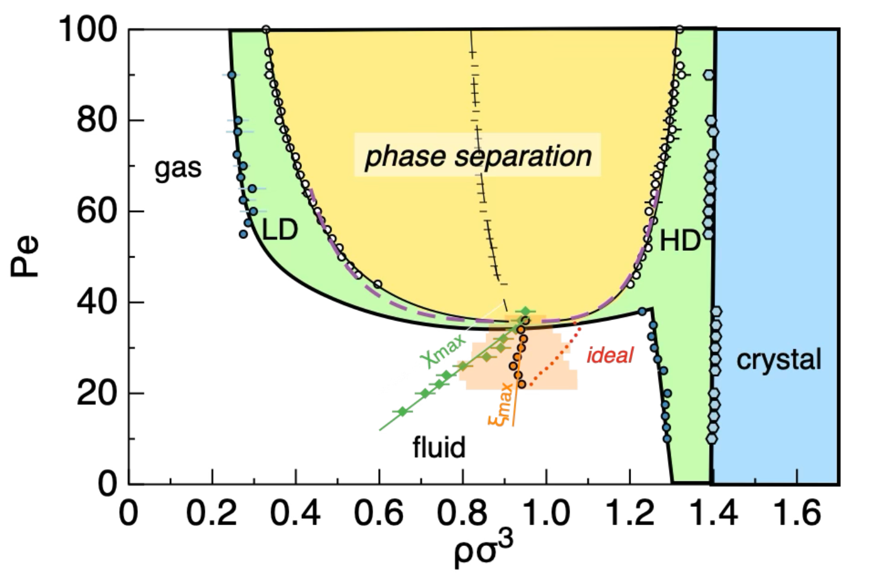

Understand how local energy consumption in the form of self-propulsion leads to new, nonequilibrium physics, with the help of example minimal models.
Understand how self-propulsion modifies the scaling behaviour of the mean squared displacement in active systems.
Describe how self-propulsion leads to nonequilibrium phase separation.
19.1 Beyond thermal systems
All the systems we have considered up to now are composed of naturally occurring or synthetic molecules (or atoms) which interact via conservative forces (potentials) and are subject to thermal fluctuations. Essentially, energy is either stored in the system as potential energy or exchanged with the environment as heat, leading to equilibrium dynamics governed by the laws of thermodynamics and statistical mechanics. In these systems, the random motion of particles arises from thermal noise, and the system eventually relaxes to a Boltzmann distribution.
However, many systems in nature and technology are driven out of equilibrium by continuous energy consumption at the microscopic scale. These are known as active matter systems. Here, each constituent (such as a bacterium, a synthetic microswimmer, or a molecular motor) converts energy from its surroundings into a variety of mechanisms:
motion
sensing
processing
growth and deformation
This is what is typically performed by many living organisms: by consuming energy locally (hence dissipating heat) they perform some function. Here we focus on one of the most fundamental kinds of functions which is motion. A bacterium uses energy to propel itself into space, explore it and eventually interact with the environment, including other bacteria.
We could, at this stage, say that these interactions and the behaviour emerging from them are inherently biological and governed solely by mechanisms that transcend the physical correlations (behavioural science). As physicists, we do not negate the existence of such dimensions (especially when communication and sensing are involved) but aim to run a different research programme: we want to gauge the level of biological surprise1, as nicely put by Andrea Cavagna, a complex system physicist.
To do so we need to understand how systems that dissipate energy locally to produce self-propelled motion can lead to the emergence of non-trivial phase behaviour and how this differs from systems that are either at thermal equilibrium (e.g. colloidal fluids) or are slowly relaxing towards it (e.g. glasses and gels).
The field of research that studies such systems is called physics of active matter and in this chapter we will describe some reference model systems and main results.
19.2 Flocking: the Vicsek model
The Vicsek model(Vicsek et al. 1995) is one of the simplest models of active matter. Its key ingredients are self-propulsion and alignment: \(N\) particles move at constant speed \(v_0\) and, at each time step, take the average direction of their neighbours within a radius \(R\), up to some noise: \[
\mathbf{r}_i(t+1)=\mathbf{r}_i(t)+v_0\hat{\mathbf{n}}_i(t),\qquad
\theta_i(t+1)=\arg\Big(\sum_{|\mathbf{r}_j-\mathbf{r}_i|<R}e^{i\theta_j(t)}\Big)+\xi_i,
\] where \(\xi_i\) is uniform in \([-\eta/2,\eta/2]\).
At high noise\(\eta\) (or low density) the particles move in random directions.
At low noise (or high density) they spontaneously move together: the system flocks.
The transition is measured by the polar order parameter \(\phi=\big|\frac1N\sum_i e^{i\theta_i}\big|\), which goes from \(0\) (disordered) to \(1\) (all particles moving together).
19.3 Life-inspired motion: run and tumble
The run-and-tumble model describes the motion of active particles, such as bacteria, that alternate between two types of movement: “runs” (straight-line motion) and “tumbles” (random reorientation). This model captures the behavior of microorganisms like E. coli.
Figure 19.1: Swimming Escherichia coli bacteria with fluorescently-labeled flagellar filaments, showing individual run-and-tumble events with flagellar filaments unbundling, cells turning, and flagellar filaments rejoining the bundle. The details of the experimental procedure are given in Turner et al. (2000).
Code
viewof simulation = {const n =100, W =1000, H =300, dt =0.5, v0 =1.5;const tumbleSlider = Inputs.range([0.01,1.0 ], {step:0.01,value:0.1,label:"Tumble rate λ"});const button =html`<button>Pause</button>`;let running =true; button.onclick= () => { running =!running; button.textContent= running ?"Pause":"Resume"; };let state =Array.from({length: n}, () => ({x:Math.random() * W,y:Math.random() * H,theta:Math.random() *2*Math.PI }));// Each particle gets a trace arraylet traces =Array.from({length: n}, () => []);// Reset traces when tumble rate changeslet lastLambda = tumbleSlider.value; tumbleSlider.addEventListener("input", () => { traces =Array.from({length: n}, () => []); lastLambda = tumbleSlider.value; });functionstep(state, λ) {return state.map((p, i) => {if (Math.random() < λ * dt) p.theta=Math.random() *2*Math.PI;// Predict next positionlet nx = p.x+ v0 *Math.cos(p.theta) * dt;let ny = p.y+ v0 *Math.sin(p.theta) * dt;// Bounce at left/right wallsif (nx <0) { p.x=0; p.theta=Math.PI-Math.random() *Math.PI;// random angle pointing right } elseif (nx > W) { p.x= W; p.theta=Math.PI+Math.random() *Math.PI;// random angle pointing left } else { p.x= nx; }// Bounce at top/bottom wallsif (ny <0) { p.y=0; p.theta= (Math.random() *Math.PI);// random angle pointing down } elseif (ny > H) { p.y= H; p.theta=Math.PI+ (Math.random() *Math.PI);// random angle pointing up } else { p.y= ny; }// Add current position to trace traces[i].push([p.x, p.y]);// Limit trace length for performanceif (traces[i].length>200) traces[i].shift();return p; }); }const container =html`<div></div>`; container.append(tumbleSlider, button);const svg = d3.select(container).append("svg").attr("width", W).attr("height", H).style("background","#f8f8f8");while (true) {const λ = tumbleSlider.value;if (running) state =step(state, λ); svg.selectAll("*").remove();// Draw traces traces.forEach(trace => {if (trace.length>1) { svg.append("path").attr("d", d3.line()(trace)).attr("stroke","#90caf9").attr("stroke-width",1).attr("fill","none"); } });// Draw particles svg.selectAll("circle").data(state).enter().append("circle").attr("cx", d => d.x).attr("cy", d => d.y).attr("r",3).attr("fill","#1976d2"); svg.selectAll("line").data(state).enter().append("line").attr("x1", d => d.x).attr("y1", d => d.y).attr("x2", d => d.x+10*Math.cos(d.theta)).attr("y2", d => d.y+10*Math.sin(d.theta)).attr("stroke","#1976d2").attr("stroke-width",1.2);yield container;await Promises.delay(16); }}
Figure 19.2: Non-interacting run and tumble particles.
The model is designed to encode a minimal set of ingredients that make the characteristic trajectories of the bacteria quite different from an ordinary random walk. We can formulate this kind of model via a simple algorithm.
Run Phase: During a run, the particle moves in a straight line with constant velocity \(v_0\): \[
\mathbf{r}(t + \Delta t) = \mathbf{r}(t) + v_0 \hat{\mathbf{n}}(t) \Delta t
\]
where:
\(\mathbf{r}(t)\) is the position of the particle at time \(t\),
\(v_0\) is the constant speed,
\(\hat{\mathbf{n}}(t)\) is the unit vector indicating the direction of motion.
Tumble Phase: During a tumble, the particle randomly reorients. The new direction \(\hat{\mathbf{n}}(t)\) is chosen from a uniform distribution over the unit sphere (in 3D) or circle (in 2D).
We can imagine a schematic algorithm: - Initialize the particle’s position \(\mathbf{r}(0)\) and direction \(\hat{\mathbf{n}}(0)\). - For each time step \(\Delta t\): - With probability \(\lambda \Delta t\), perform a tumble (randomize \(\hat{\mathbf{n}}\)). - Otherwise, update the position using the run equation. - Repeat for the desired simulation duration.
Here, \(\lambda\) is the tumble rate, which determines the frequency of reorientation events.
The mean squared displacement (MSD) of run-and-tumble particles exhibits two regimes, connected by a crossover:
Ballistic regime (short times):
At very short times, before the first tumble occurs, particles move in straight lines at constant speed. The MSD grows quadratically with time: \[
\langle \Delta r^2(t) \rangle \sim v_0^2 t^2
\]
Diffusive regime (long times):
At times much longer than the average run time (\(t \gg 1/\lambda\)), the direction of motion has been randomized many times, and the motion becomes diffusive: \[
\langle \Delta r^2(t) \rangle \sim 4 D_{\text{eff}} t
\] where \(D_{\text{eff}} = \frac{v_0^2}{2\lambda}\) in 2D.
At intermediate timescales, the MSD transitions smoothly from ballistic to diffusive behavior.
19.4 Active Brownian particle and motility-induced phase separation
Active Brownian particles (ABPs) are a minimal model for self-propelled colloids, such as Janus particles, which move due to chemical reactions at their surfaces. For example, a colloid half-coated with platinum can catalyze the decomposition of hydrogen peroxide in solution, generating local gradients that propel the particle forward.
The ABP model captures the essential physics of these systems. Each particle moves with a constant speed in a direction that undergoes rotational diffusion. This leads to persistent motion at short times and diffusive behavior at long times, similar to the run-and-tumble model but with continuous reorientation.
The dynamics of an ABP can be described by the following equations:
Translational Motion: The position \(\mathbf{r}(t)\) of the particle evolves as: \[
\frac{d\mathbf{r}(t)}{dt} = v_0 \hat{\mathbf{n}}(t) + \sqrt{2D_t} \boldsymbol{\xi}(t),
\] where:
\(v_0\) is the self-propulsion speed,
\(\hat{\mathbf{n}}(t)\) is the unit vector indicating the particle’s orientation,
\(D_t\) is the translational diffusion coefficient (for a sphere, given by the Stokes-Einstein relation),
\(\boldsymbol{\xi}(t)\) is a Gaussian white noise term with zero mean and correlations \(\langle\xi_i(t)\xi_j(t')\rangle=\delta_{ij}\delta(t-t')\).
Rotational Motion: The orientation \(\hat{\mathbf{n}}(t)\) undergoes rotational diffusion, described by: \[
\frac{d\hat{\mathbf{n}}(t)}{dt} = \sqrt{2D_r}\, \boldsymbol{\eta}(t)\times\hat{\mathbf{n}}(t),
\] where:
\(D_r\) is the rotational diffusion coefficient,
\(\boldsymbol{\eta}(t)\) is a Gaussian white noise term as above (the cross product keeps \(\hat{\mathbf{n}}\) a unit vector).
In 2D, the orientation \(\hat{\mathbf{n}}(t)\) can be expressed in terms of an angle \(\theta(t)\): \[
\hat{\mathbf{n}}(t) = (\cos\theta(t), \sin\theta(t)),
\] and the rotational dynamics reduce to: \[
\frac{d\theta(t)}{dt} = \sqrt{2D_r} \eta_\theta(t),
\] where \(\eta_\theta(t)\) is a scalar Gaussian white noise term.
The relative importance of self-propulsion and thermal motion is measured by the Péclet number\(\mathrm{Pe}=v_0/\sqrt{D_tD_r}\): for \(\mathrm{Pe}\ll1\) the particles behave as passive Brownian colloids, while for \(\mathrm{Pe}\gg1\) they are strongly active.
We can analyse this a little more in detail by considering the characteristic features of the displacements of (dilute or noninteracting) active Brownian particles.
19.4.1 Mean squared displacement of Active Brownian Particles
Indeed, it can be shown (see below) that the mean squared displacement for active Brownian particles displays three regimes: \[
\operatorname{MSD}(\tau) = \left[4 D_T + 2 v^2 \tau_R \right] \tau + 2 v^2 \tau_R^2 \left( e^{-\tau / \tau_R} - 1 \right)
\]
where: - \(D_{\mathrm{eff}} = D_T + \frac{v_0^2}{2 D_r}\) is the effective long-time diffusion coefficient (with \(\tau_R = 1/D_r\)),
This clearly shows that there are three main regimes:
a very short time diffusive regime \(\operatorname{MSD}(\tau) \simeq 4D_T\tau\)
an intermediate regime, \(4D_T/v^2 \ll \tau \ll \tau_R\), before any reorientation has taken place: \[
\operatorname{MSD}(\tau) = 4 D_{\mathrm{T}} \tau + v^2 \tau^2
\] leading to super-diffusive (ballistic) motion
a final regime where the reorientation has taken place and where a new diffusive regime is reached where the MSD is proportional to time, i.e. \(\operatorname{MSD}(\tau)=\left[4 D_{\mathrm{T}}+2 v^2 \tau_{\mathrm{R}}\right] \tau\) but with a new diffusion constant.
Note
We derive the MSD expression for 2d Active Brownian particles.
We first integrate the velocity
\[
\mathbf{r}(\tau) - \mathbf{r}(0) = v \int_0^\tau \hat{\mathbf{n}}(s) ds + \sqrt{2 D_T} \int_0^\tau \boldsymbol{\eta}(s) ds.
\]
Since \(\boldsymbol{\eta}(t)\) is independent from \(\hat{\mathbf{n}}(t)\),
This crossover from ballistic to diffusive behavior is a hallmark of persistent random walks such as ABPs.
19.4.2 Interacting ABPs and motility induced phase separation
When the active Brownian particles are actually interacting with each other, they can give rise to an exceptional nonequilibrium phenomenon of self organisation called motility-induced phase separation (MIPS).

Figure 19.3: Motility induced phase separation in a 3D system of active Brownian particles. As the persistence of the motion increases (i.e. the rotational diffusion decreases), the system phase separates into a dense and a dilute phase, akin to a liquid-gas phase separation in equilibrium systems. Adapted from Turci and Wilding (2021)
The idea is to consider purely repulsive particles (i.e hard spheres) obeying the ABP dynamics. This means that, in equilibrium (i.e. in the absence of self-propulsion) no liquid-gas phase separation is possible (see Section 15.3.1).
However, as we reduce the rotational diffusion, the persistent motion becomes more important, the system becomes more out of equilibrium and new physics comes to play.
In particular, the collision between particles are no longer leading to quick decorrelation: on the contrary, head-to-head collisions between the particles mean that there is a finite residence time for a pair of particles to stay in each other neighborhoods. This effect is amplified by multiple collisions, leading to many-body caging effects that promote density heterogeneities in the fluid.
The result is striking: for sufficiently low rotational diffusions, the fluid of active Brownian particles spontaneously phase separates into a dilute and a dense phase, akin to the gas and liquid phase of equilibrium systems. As in equilibrium liquid-gas coexistence, the coexistence region ends at a critical point, where density fluctuations are strongly enhanced.
This has been examined in detail in computer simulations, both in two dimensional systems and in three dimensional systems (where the physics is even richer and presents parallels with the situation of colloid-polymer mixtures due to the very short range nature of the effective interactions between active particles).
19.5 Summary
The table collects the main results of this chapter. Follow the links to go back to the relevant part.
Purely repulsive ABPs phase separate at low \(D_r\)
Persistent collisions slow particles down: dense and dilute phases, with a critical point
References
Turci, Francesco, and Nigel B. Wilding. 2021. “Phase Separation and Multibody Effects in Three-Dimensional Active Brownian Particles.”Phys. Rev. Lett. 126 (January): 038002. https://doi.org/10.1103/PhysRevLett.126.038002.
Turner, Linda, William S Ryu, and Howard C Berg. 2000. “Real-Time Imaging of Fluorescent Flagellar Filaments.”Journal of Bacteriology 182 (10): 2793–801.
Vicsek, Tamás, András Czirók, Eshel Ben-Jacob, Inon Cohen, and Ofer Shochet. 1995. “Novel Type of Phase Transition in a System of Self-Driven Particles.”Physical Review Letters 75 (6): 1226–29. https://doi.org/10.1103/PhysRevLett.75.1226.
Andrea Cavagna, a complex system physicist, describes “biological surprise” as the extent to which observed behaviour cannot be explained by physical interactions alone.↩︎